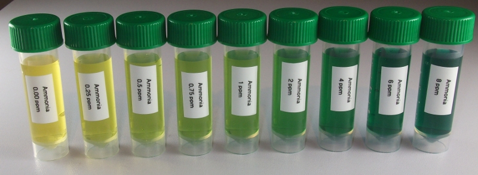

API ammonia test kit¶

Reagents & Equipment¶
- Colorimeter
- Cuvettes
- 5 mL sample bottles or other capped tubes
- API ammonia test kit
- (Optional) Distilled water for sample dilutions
Colorimeter set-up¶
- Wavelength: 625 nm. Red led (colorimeter RGB board)
- Ammonia standard data: download a data file or prepare your own nitrate standard data
- Before measuring blank the colorimeter against water or a distilled water sample developed with API reagent as described below
Method¶
- Fill an empty sample bottle to the 5 mL line with your water sample.
- Add 8 drops of API Ammonia Test Solution, Bottle #1.
- Cap the bottle and invert to mix the solutions.
- Add 8 drops of API Ammonia Test Solution, Bottle # 2.
- Cap the bottle and shake thoroughly to mix.
- Wait 5-10 mins for the color to fully develop.
- Pour some of the sample into a cuvette, place in the colorimeter and click measure. The program will return the ammonia concentration in ppm.